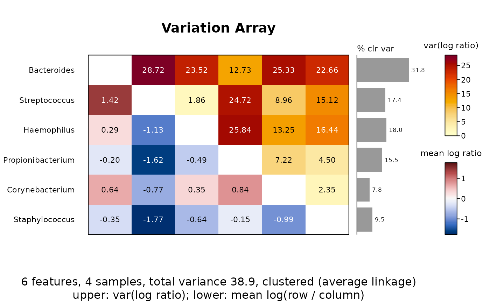

Aitchison's variation array, the standard first summary of a composition: for every pair of features, the variance of their log ratio (above the diagonal) and its mean (below), with each feature's share of the total variance. Small variances mark nearly proportional pairs.
Usage
variation_array(
counts,
margin = 1L,
pseudocount = NULL,
clust = NULL,
cpus = n_cpus()
)Arguments
- counts
A numeric matrix of non-negative abundances (samples \(\times\) features), or any of the objects listed under Input Types. Counts, proportions, and the output of
replace_zeros()are all accepted: each sample's scale cancels out of the log ratios. Pairs are taken between the features (the columns whenmargin = 1), and the variance is over the samples.- margin
The margin containing samples.
1if samples are rows,2if samples are columns. Ignored whencountsis a special object class (e.g.phyloseq). Default:1- pseudocount
Added to every value before taking logs.
NULL(the default) adds nothing whencountshas no zeros, and otherwise uses half the smallest non-zero value, with a warning.0adds nothing, and is an error whencountshas zeros. See Zeros.- clust
Whether and how to reorder the features:
NULL(the default) orFALSEto keep their input order, or one ofstats::hclust()'s linkage methods ("average","complete","single","ward.D","ward.D2","mcquitty","median","centroid"), or"pcoa"to order them along the first axis ofpcoa(), each of the distances \(\sqrt{\tau_{ij}}\). The result's rows and columns are then reordered, and itsorderattribute gives each feature's position in the input. WithNULL,plot()clusters the features itself (average linkage), without changing the result.- cpus
How many parallel processing threads should be used. The default,
n_cpus(), is the CPU cores this R process may use, within any limits set on it. Results are the same for anycpus.
Value
A \(D \times D\) numeric matrix of class
c("ecodive_variation_array", "matrix", "array"), with the features as
its row and column names (their positions when counts has no feature
names). Element [i, j] is
above the diagonal (\(i < j\)): \(\tau_{ij}\), the variance of \(\log(x_i / x_j)\), which is
vlr();below the diagonal (\(i > j\)): \(\xi_{ij}\), the mean of \(\log(x_i / x_j)\), row over column: positive when the row's feature is the more abundant, on average in log terms;
on the diagonal:
NA.
Attributes:
clr_var: each feature's clr variance, named;total_var: the total variance, their sum;pseudocount: the pseudocount added before taking logs (0for none);n: the number of samples;order(withclust): each feature's position in the input;method:"variation_array";display: its title,"Variation Array", andclust(see ecodive_display).
print() shows the first 10 features and the total variance;
plot() draws the array (see plot.ecodive_variation_array()).
Arithmetic, and subsetting with [, give a plain matrix.
Details
With \(\ell_{si} = \log(x_{si} + c)\) for sample \(s\), feature
\(i\) and pseudocount \(c\) (natural logs), over \(n\) samples and
\(D\) features:
$$\tau_{ij} = \frac{1}{n - 1} \sum_{s=1}^{n} \left(\ell_{si} -
\ell_{sj} - \overline{\ell_i} + \overline{\ell_j}\right)^2, \qquad
\xi_{ij} = \overline{\ell_i} - \overline{\ell_j}$$
with \(\overline{\ell_i}\) feature \(i\)'s mean log over the samples.
\(\tau\) is the same as vlr()'s, computed by the same code, and so
independent of each sample's total, and of the other features. The means
\(\xi_{ij}\) depend on the samples' totals only through their common
scale, which cancels in the ratio.
Total and clr variances. The total variance of the composition is
$$\mathrm{totvar} = \frac{1}{2D} \sum_{i,j} \tau_{ij}$$
(Aitchison 1986), the sum of the variances of its clr coordinates. Each
feature's clr variance follows from the \(\tau\)s alone,
$$\mathrm{var}(\mathrm{clr}_i) = \frac{1}{D}\Big(\sum_j \tau_{ij} -
\mathrm{totvar}\Big)$$
since \(\sum_j \tau_{ij} = D\,\mathrm{var}(\mathrm{clr}_i) +
\mathrm{totvar}\) (the clr coordinates sum to 0). They are the
clr_var attribute, and they equal the column variances of
normalize(counts, "clr") with the same pseudocount. A feature with a
large share of the total variance drives the clr PCA (pca(counts, norm = "clr")) and the Aitchison distances (aitchison()) between samples.
Two displays split the same total variance: the covariance biplot
(plot(pca(...), scaling = "covariance")), whose rays' lengths
approximate the clr standard deviations, and the CoDa-dendrogram
(Pawlowsky-Glahn & Egozcue 2011), by balance.
Sign convention. Aitchison (1986) and Pawlowsky-Glahn & Egozcue
(2011) put the means below the diagonal; ecodive's are of the row's
feature over the column's, so that \(\xi_{ij} = -\xi_{ji}\). compositions'
variation() gives \(\tau\) alone, as a full symmetric matrix.
Size
The result is a dense \(D \times D\) matrix: 2,000 features take 32 MB, and more give a warning. Filter out rare features first; the table itself stays sparse.
Zeros
Logs of zero are undefined, so zeros need replacing first. With
pseudocount = NULL (the default), no pseudocount is used when
counts has no zeros; otherwise half the smallest non-zero value is
added to every value, with a warning. The recommended input is a table
with its zeros replaced by replace_zeros(), which has none and is
used as it is.
propr (Quinn et al. 2017) replaces only the zeros, by 1, which is not
pseudocount = 1 (that adds 1 to every value). To reproduce it, write
x[x == 0] <- 1 and then call these functions on x.
Pseudocounts are not neutral: in sparse tables the many zeros, all given the same value, can dominate the variances. Filtering out rare features first helps.
Input Types
The counts parameter is designed to accept a simple numeric matrix, but
seamlessly supports objects from the following biological data packages:
phyloseqrbiomSummarizedExperimentTreeSummarizedExperiment
For large datasets, standard matrix operations may be slow. See
vignette('performance') for details on using optimized formats
(e.g. sparse matrices) and parallel processing.
References
Aitchison, J. (1986). The Statistical Analysis of Compositional Data. Chapman & Hall.
Pawlowsky-Glahn, V., & Egozcue, J. J. (2011). Exploring compositional data with the CoDa-dendrogram. Austrian Journal of Statistics, 40, 103–113. doi:10.17713/ajs.v40i1&2.202
Lovell, D., Pawlowsky-Glahn, V., Egozcue, J. J., Marguerat, S., & Bähler, J. (2015). Proportionality: a valid alternative to correlation for relative data. PLoS Computational Biology, 11, e1004075. doi:10.1371/journal.pcbi.1004075
See also
vlr(), the variances alone as a dist; zero_pattern();
normalize() ("clr"); pca(); replace_zeros().
Examples
# Zeros replaced first
x <- replace_zeros(ex_counts, 'mult')
va <- variation_array(x)
va
#> # Variation array of 6 features (4 samples), total variance 38.9
#> # upper: var(log ratio); lower: mean log(row / column)
#> Streptococcus Bacteroides Corynebacterium Haemophilus
#> Streptococcus 28.700 8.960 1.860
#> Bacteroides -1.420 25.300 23.500
#> Corynebacterium -0.774 0.643 13.200
#> Haemophilus -1.130 0.291 -0.352
#> Propionibacterium -1.620 -0.199 -0.842 -0.490
#> Staphylococcus -1.770 -0.352 -0.995 -0.643
#> Propionibacterium Staphylococcus
#> Streptococcus 24.700 15.10
#> Bacteroides 12.700 22.70
#> Corynebacterium 7.220 2.35
#> Haemophilus 25.800 16.40
#> Propionibacterium 4.50
#> Staphylococcus -0.153
#> # % of the total variance in each clr coordinate:
#> Streptococcus Bacteroides Corynebacterium Haemophilus
#> 17.4 31.8 7.8 18.0
#> Propionibacterium Staphylococcus
#> 15.5 9.5
# The upper triangle is vlr(); the clr variances sum to the total
attr(va, 'total_var')
#> [1] 38.8672
sum(attr(va, 'clr_var'))
#> [1] 38.8672
plot(va)

# Clustered when computed: the result is reordered
va <- variation_array(x, clust = 'ward.D2')
attr(va, 'order')
#> [1] 1 4 2 5 3 6